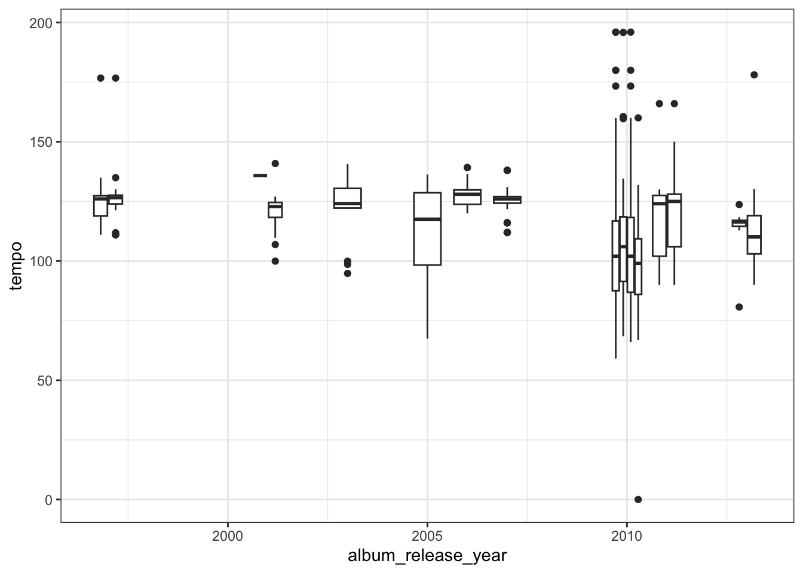
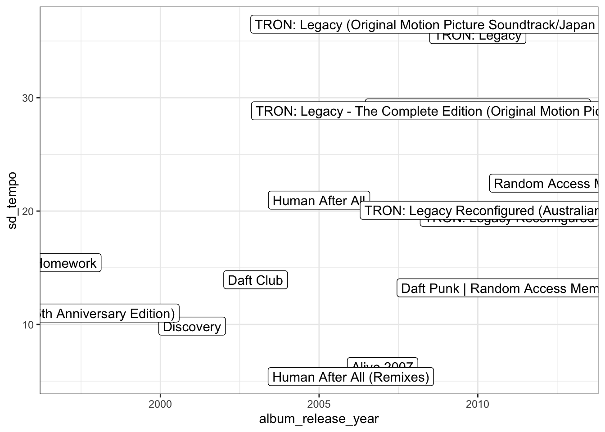
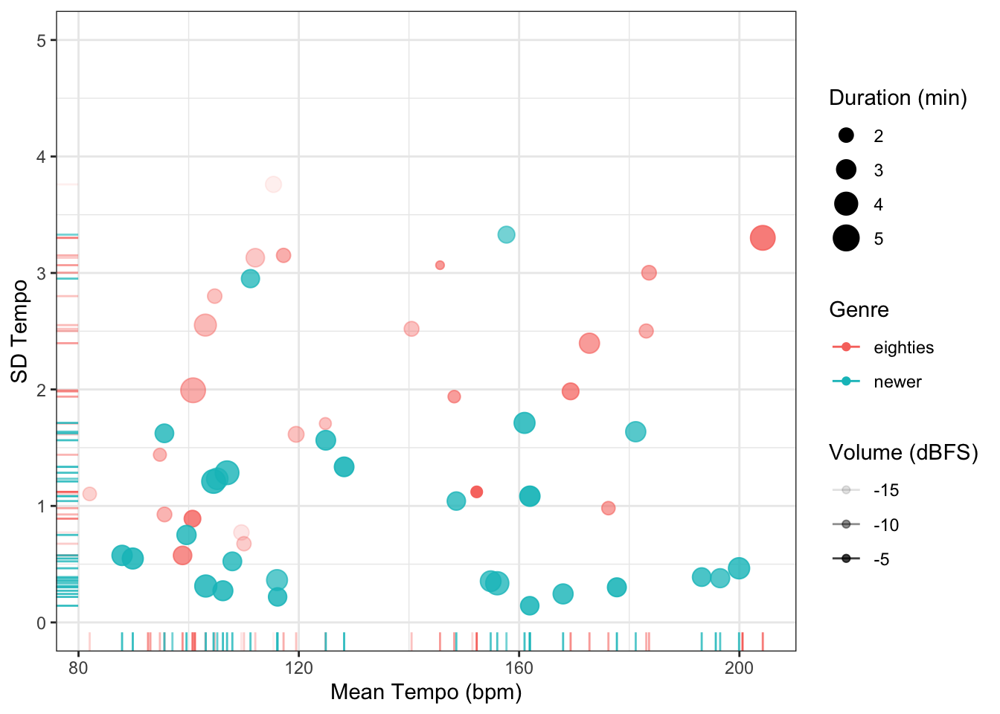
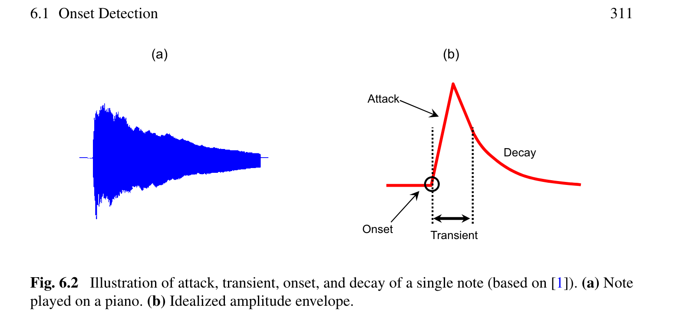
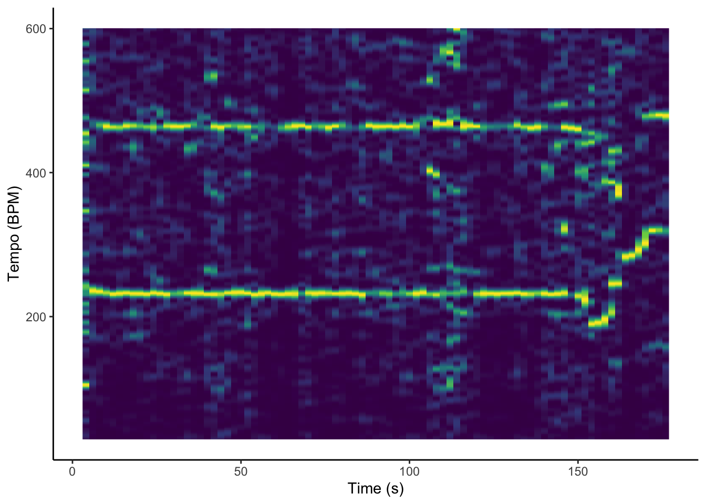
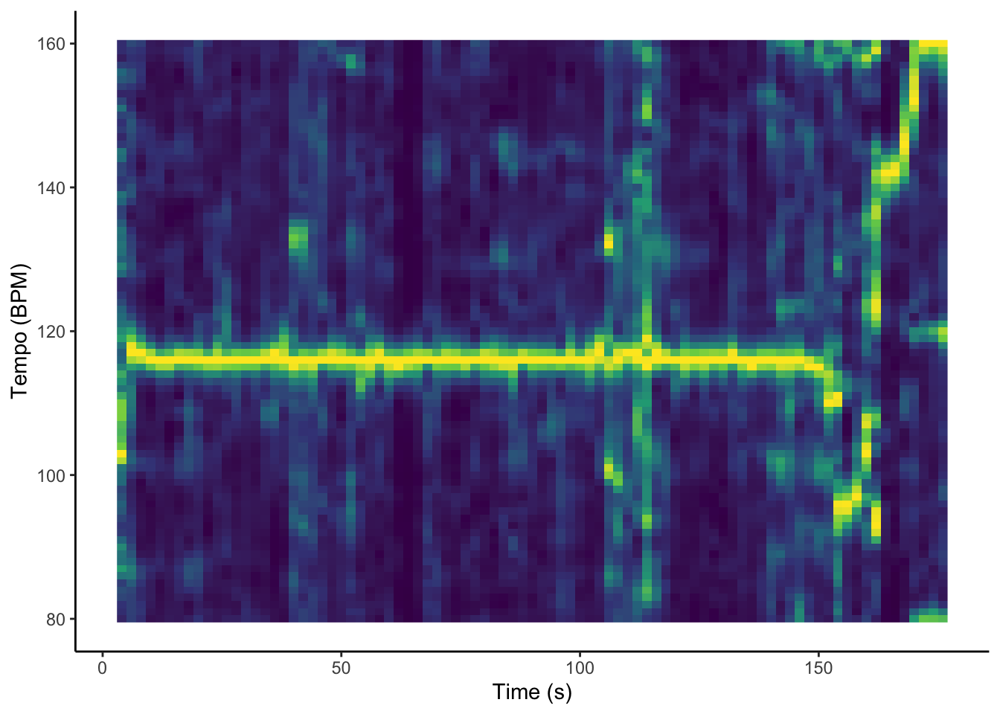

Week 3: Time
Agenda for Monday:
- Talk about the midterm lit review a bit
- Talk about sampling.
Midterms
- Due April 28th
- 1-3 pages long.
- construct a literature review of the topic you’re interested in writing about. This could culminate in a hypothesis, and a discussion of how your work fills the current gaps in the literature.
- Be sure to include an overview of previous research related to the topic. This should include both empirical and non-empirical work. So if you’re focusing on the memory for jazz licks, for example, research on improvisational styles should be included alongside work on memory for musical ideas. It need not be all-encompassing, but it should try to cover as much ground as possible.
- Address a gap in the current literature, or that between theory and research. End with a discussion of your study, and how it hopes to fill in these gaps.
- Feel free to meet with me if you have any questions.
Sampling
(borrowed from David Huron’s class on this).
Populations
- A population is everything or everyone that you’re interested in.
- e.g. all the world’s people
- all the world’s people including living and deceased
- all Western-enculturated people
- all people who enjoy listening to music
- all clarinet players
A “population” does not refer only to people: Other examples:
- all of the music written by Vivaldi
- all solo flute music (both with and without accompaniment)
- all music in the minor mode
- all of the jazz scores available in the New York Public Library
- all performances of Rachmaninov’s 2nd piano concerto
Sample
- Sample: a subset of the population that you hope closely resembles the population as a whole.
- A sample is said to be representative when the property of interest is identical in both the sample and the population.
Bias
- A sample is said to be biased when the property of interest differs between the sample and the population.
WEIRD
- Western
- Educated
- Industrialized
- Rich
- Democratic
Defining Your Population
- You can’t sample a population unless you have a clear idea of what constitutes the population of interest.
- Suppose, for example, that you are a political pollster. Your aim is to predict the likely election results for a national election in Denmark. What, precisely, is the population you are interested in?
Defining Your Population (continued)
- All Danish citizens?
- All people living in Denmark?
- All people living in Denmark eligible to vote?
- All people eligible to vote in Danish elections?
- All people likely to vote in Danish elections?
Sampling Method
- Sampling method: the way you recruit or assemble your sample. When your population consists of people, sampling methods might include soliciting information by telephone (telephone sampling), street sampling, mail sampling, web sampling, classroom sampling, concert sampling, etc.
Sampling Bias
- Sampling bias: when the sampling method introduces differences that cause the sample not to be representative. We try to avoid or minimize sampling bias.
- When conducting a telephone survey, a pollster may be tempted to ask to speak to a respondent’s spouse. However, spouses are likely to share many things in common (such as political views) so the sampling method will introduce a bias.
Simple Random Sampling
- Simple Random Sampling. Suppose we want to know about musical instrument sales in the City of Nashville. We could use the phone book to identify all of the shops within the city boundaries that sell musical instruments. Perhaps we discover that there are 131 retailers. From this list, we might randomly select 25 retailers in order to carry out our survey.
Systematic Sampling
Suppose that we have a questionnaire we want to distribute to people who attended a concert. There might be 500 audience members, but we have only 50 surveys to distribute. One approach would be to distribute the questionnaires to the first 50 people leaving the concert hall.
Matched Random Sampling
- A way of linking members from two or more samples. For example, a study might involve matching each professional musician with an amateur musician who plays the same instrument.
Convenience Sampling
- Convenience Sampling. A convenience sample simply takes advantage of whatever might be available. For example, a sample of organ music by Gabriel Fauré might simply consist of all of the scores available in a music library. Similarly, we might stand on a street corner and ask whoever passes by to answer questions on a survey.
Stratified Sampling
- When we have reason to suspect that differences in sub-populations might influence the results, it is common to sample in such a way to ensure that each of the main sub-populations is represented.
- Post and Huron (2009) were interested in common-practice era tonal classical music. So we decided to use a stratified sample consisting of music from three periods: Baroque, Classical and Romantic. Our overall sample consisted of equivalent numbers of works from each of these historical eras.
Quota Sampling
- A type of stratified sampling in which sub-samples are weighted according to their prevalence in the population.
- Suppose that we find that 52% of instrumentalists are most accomplished on guitar, 33% are most accomplished on keyboards, 12% on flute, 9% on trumpet, 8% on violin, etc. In quota sampling, we would aim to sample the same proportions for each instrument.
Exercise
Tempo and Time
In this class, we are going to focus on tempo and time. There are a few different ways to examine tempo with the Spotify API. Today we will look at:
- The mean tempo of a piece (given at the more global, piece level)
- Ways of exploring the flexibility of the tempo of a piece.
Tempo Average
The general default at the track level is an averaging of an entire piece. This can be useful at times, but it should be noted that it is a broad average for a parameter in which the variability is often quite meaningful.
What if we wanted to see how the songs of Daft Punk changed in tempo changed over time?
First we would make sure that Spotify had your user access token, and then get the artist audio features:
access_token <- get_spotify_access_token()
daft_punk <- get_artist_audio_features('daft punk')Then we would be able to simply plot the album’s mean tempo with the variance (and outliers) with ggplot, as below:
ggplot(daft_punk, aes(x=album_release_year, y=tempo, group = album_name)) + geom_boxplot() +
theme_bw()
We could also explore the variance of tempo within an album by looking at the standard deviation.
album_sd <- daft_punk %>%
group_by(album_name, album_release_year) %>%
summarise(sd_tempo = sd(tempo))`summarise()` has grouped output by 'album_name'. You can override using the
`.groups` argument.And then we can similarly plot this information:
ggplot(album_sd, aes(x=album_release_year, y=sd_tempo, group = album_name)) + geom_point() +
geom_label(
aes(label=album_name)) +
theme_bw()Warning: Removed 1 rows containing missing values (`geom_point()`).Warning: Removed 1 rows containing missing values (`geom_label()`).
Other aspects of tempo:
We can also look at other elements of tempo, such as variability within sections. Here we have a question about the differences in tempo between punk in the 1980s and later punk (1990s and 2000s). I’m interested not just in the tempo, but also the variation of tempo.
There are a couple of points to notice in this code:
- Note how we are able to get data from a playlist. A playlist can be a good way for you to construct a sample.
- Note the add_audio_analysis function from the
compmuslibrary. This adds track level analysis information to the broader list of global information. It’s great.
Sit for a minute with this data. You’ll see the columns at the end that provided the specific audio analysis for each piece.
eighties_punk <-
get_playlist_audio_features(
"kristian",
"5sxuwIQlaByb6Sx2OEwWTx"
) %>%
slice(1:30) %>%
add_audio_analysis()
nineties_and_aughts_punk <-
get_playlist_audio_features(
"CW",
"39sVxPTg7BKwrf2MfgrtcD"
) %>%
slice(1:30) %>%
add_audio_analysis()Here we bind both playlists together as a single data frame:
punk <-
eighties_punk %>%
mutate(genre = "eighties") %>%
bind_rows(nineties_and_aughts_punk %>% mutate(genre = "newer"))The spotify analysis gives us section markers as well, and we can use the code below to summarise the tempo, loudness, and duration for each section. Note the use of the map function, which takes the input and applies a function to that input (here the summarise_at function, and the summarise_at itself, which provides a summary of each of these columns.
Here we are storing it in a variable called summarised_punk.
summarised_punk <- punk %>%
mutate(
sections =
map(
sections, # sections or segments
summarise_at,
vars(tempo, loudness, duration), # features of interest
list(section_mean = mean, section_sd = sd) # aggregation functions
)
)Now we take this variable and plot it using ggplot.
The process below is as follows:
- take the table above with summarized section information and unnest it (this takes the sections list of information and turns it into rows and columns).
- Pipe that into ggplot, with the aesthetics function plotting the tempo on the x-axis, the standard deviation on the y-axis, the color being which genre we used (eighties or not). The color saturation is set to the loudness variable.
- We then tell ggplot that we want this to be a scatterplot with the
geom_pointfunction, and that the size of each point should be the duration of the piece (divided by 60 as Spotify just gives it in seconds). - We then add a rug plot which gives the ticks on both axes to show the distribution of events.
- We then add a black and white theme because nobody likes default graphics.
- We then add the size of the graph and the axis labels.
summarised_punk %>%
unnest(sections) %>%
ggplot(
aes(
x = tempo,
y = tempo_section_sd,
colour = genre,
alpha = loudness
)
) +
geom_point(aes(size = duration / 60)) +
geom_rug() +
theme_bw() +
ylim(0, 5) +
labs(
x = "Mean Tempo (bpm)",
y = "SD Tempo",
colour = "Genre",
size = "Duration (min)",
alpha = "Volume (dBFS)"
) Warning: Removed 7 rows containing missing values (`geom_point()`).
In-class exercises:
- How is tempo treated differently across the albums of the Beatles?
Wednesday
Plan for the day:
- Talk about your homework a bit.
- Look at some tap data, and what we might actually be able to do with it.
- Talk about how Spotify (might) calculate tempo.
How might we look at tempo across pieces?
One way to get this is to just tap the tempo, and then align it to the onsets. But how do we find onsets?
This is where a novelty function comes in. (see Müller on Fourier Tempograms). Put (extremely) succinctly, a novelty function detects changes in the energy or the spectrum of the signal. So looking for energy peaks might be a good marker for “peaks in energy”.

After finding these onsets, it then examines a correlation between various sinusoids and picks the most likely one. There are many different ways of approaching this.
One issue is the presence of so-called “tempo octaves”. That is, it finds tempos at twice the beat, half the beat, etc..
Here’s a graph of AJR’s “World’s Smallest Violin”:
get_tidy_audio_analysis("3jHBgKdLCf46aP3HRI0WYv") %>%
tempogram(window_size = 8, hop_size = 2) %>%
ggplot(aes(x = time, y = bpm, fill = power)) +
geom_raster() +
scale_fill_viridis_c(guide = 'none') +
labs(x = 'Time (s)', y = 'Tempo (BPM)') +
theme_classic()
This seems quite strange, though. It’s not really a great indicator of tempo…
Müller points out that the Fourier-based method tends to struggle with these tempo-octaves, and a cyclic model, which look at “subharmonics” rather than harmonics, and are a bit better for mid-level tempo finding. The example below seems to work a bit better. Notice how the cyclic option has been switched to TRUE.
get_tidy_audio_analysis("3jHBgKdLCf46aP3HRI0WYv") %>%
tempogram(window_size = 8, hop_size = 2, cyclic=TRUE) %>%
ggplot(aes(x = time, y = bpm, fill = power)) +
geom_raster() +
scale_fill_viridis_c(guide = 'none') +
labs(x = 'Time (s)', y = 'Tempo (BPM)') +
theme_classic()